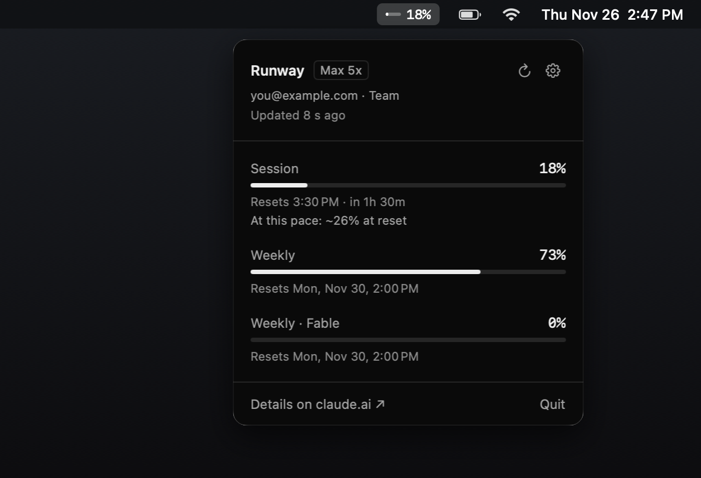

Your Claude plan usage, always in the menu bar.
See how much of your 5-hour session and weekly limit is left at a glance, and get a heads-up before you hit the wall.
Download for Mac
What it shows
Every limit in one popover. Session, weekly, per-model weekly limits and extra usage credits, with reset times.
Where your pace leads. “At this pace: ~41% at reset”, or a warning when you are on track to hit 100% first.
A heads-up in time. Notifications at 50, 80 and 95%, once per window, and an optional notice when the session refills.
Colour only when it matters. Monochrome until 80%, amber from there, red from 95%. Follows light and dark mode.
Zero setup
If Claude Code is installed and logged in on your Mac, Runway just works. Your token is read from your keychain, only ever sent to api.anthropic.com, and never stored. No account, no analytics.
Prefer the terminal?
curl -fsSL https://raw.githubusercontent.com/Romainl01/runway/main/install.sh | bash